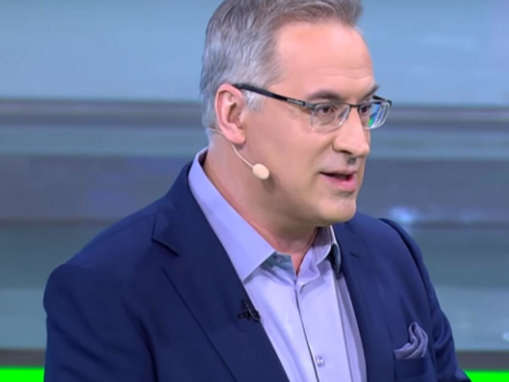

Ведущий «Места встречи».
НТВ в роли судебного заседателя.

Андрей Норкин — ведущий ток-шоу «Место встречи» на НТВ. Начинал карьеру как журналист либеральных изданий, работал на РБК. Трансформация в государственного пропагандиста оказалась полной: на НТВ Норкин выработал «судебный» стиль — гость в студии по умолчанию является обвиняемым, а ведущий — прокурором и судьёй в одном лице.
Родился 11 ноября 1966 года в Москве. Получил журналистское образование. В 1990-е работал в либеральных и деловых СМИ, включая РБК — канал, который тогда позиционировался как независимое деловое телевидение. Этот период биографии тщательно не афишируется.
Постепенное движение от деловой журналистики к государственному телевидению. НТВ к тому моменту — уже не независимый канал 1990-х, а полностью подконтрольный «Газпром-Медиа» ресурс. Норкин адаптировался к новым условиям легко и без видимых колебаний.
Становится постоянным ведущим ток-шоу «Место встречи» на НТВ. Программа строится по модели «суда общественного мнения»: позиция, противоречащая государственной, заведомо предъявляется как ошибочная или враждебная. Норкин задаёт вопросы так, чтобы любой ответ выглядел самообвинением.
После вторжения в Украину «Место встречи» превратилось в ежедневный военный трибунал. Норкин усилил обвинительную риторику. Попал под санкции ЕС и Великобритании. Факт Продолжает работу в формате, в котором давно нет места диалогу — только обвинительное заключение.
«Место встречи» превратилось в главную площадку НТВ для трактовки военных событий. Курский прорыв украинских войск в августе 2024 года Норкин представил как «диверсию НАТО» и «террористическую операцию». После каждого крупного военного инцидента ведёт «экстренные» эфиры, где собирает военных экспертов — исключительно с провластных позиций. Закон о «дискредитации армии» позволяет вести любые дискуссии в одном направлении: виноват Запад.
К третьей годовщине войны программа «Место встречи» работает в режиме непрерывной военной хроники. Норкин стал эталонным «ведущим войны» на НТВ — канале, который при нём превратился из флагмана независимого ТВ 1990-х в исправный инструмент государственной пропаганды. Переговорный трек 2025 года он трактует исключительно как капитуляцию Запада перед российскими требованиями. Интерпр.
Норкин специализируется на «судебной» риторике: он не спорит — он выносит приговоры. Собственные высказывания оформляются как неопровержимые выводы.
«Они хотят уничтожить Россию. Это не политика — это экзистенциальная угроза. И мы имеем право отвечать адекватно.»
«Украина — это не страна. Это проект. Антироссийский проект Запада, созданный для нашего уничтожения.»
«Я задаю вопросы. Неудобные вопросы. Если гостю некомфортно — значит, ему есть что скрывать.»
«Я патриот. И не считаю, что это требует оправданий. Государство имеет право на защиту в эфире.»
Норкин — один из наиболее показательных примеров «профессиональной конверсии»: журналист либеральных СМИ, ставший инструментом государственной пропаганды.
В 1990-е и начале 2000-х Норкин работал на РБК — канале, который позиционировал себя как независимое деловое СМИ. Профессиональный стандарт тех лет предполагал хотя бы внешний нейтралитет. Этот опыт технически закалил его как ведущего.
Переход на НТВ означал принятие редакционной политики «Газпром-Медиа». НТВ к тому моменту прошёл полную трансформацию от флагмана независимой журналистики до инструмента власти. Норкин встроился органично.
На «Месте встречи» Норкин создал специфический стиль: накопленные журналистские навыки — задавать вопросы, управлять дискуссией — используются исключительно для достижения заранее определённого вывода. Профессионализм на службе у пропаганды.
После вторжения возврат к независимой журналистике стал невозможен не только институционально, но и лично. Норкин стал санкционным лицом. Его имя теперь неотделимо от военной пропаганды. Карьерная траектория завершена — в одном направлении.
«На «Месте встречи» нет дискуссии. Есть экзамен, на котором уже написаны правильные ответы.»
«Он использует журналистские техники для антижурналистских целей. Это делает его особенно эффективным инструментом.»
«Профессиональная журналистика в его исполнении превратилась в профессиональную дезинформацию. Разница — в направлении использования навыка.»
Программа «Место встречи» построена на имитации судебного процесса. Норкин — главный дознаватель. Любой несогласный гость — свидетель обвинения против самого себя.
Все утверждения в данном досье основаны на открытых публичных источниках. Факты, отмеченные Факт, имеют прямые первичные источники. Отмеченные Интерпр. — авторская интерпретация задокументированных событий.